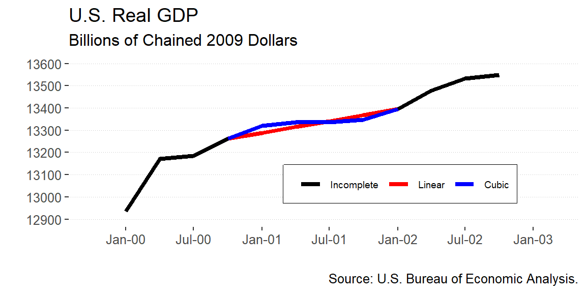

# Read from a raw csv file
raw.data <- read.table("./data/data.us.csv", sep = ",", header = T)
# When you have the dates in the original csv file
xts.data <- xts(raw.data, order.by = as.Date(raw.data$date, "%m/%d/%Y"))
# When you don't have the dates in the original csv file but know the starting date
date = seq(as.Date("1960/3/1"), by = "3 month", length.out = nrow(raw.data))
xts.data <- xts(raw.data[,-1], order.by = date, frequency = 3)Read and Define the Time Series (TS) Objects
Read from a Saved File
These functions reads a file without a TS structure and then defines the TS object.
This function reads and declares the TS structure from the begining.
# Note that this is a TS with a zoo structure
ts.data <- read.zoo("./data/data.us.csv", index.column = 1, sep = ",", header = T, format = "%m/%d/%Y")
# Or...
ts.data <- ts(raw.data[,2:4], frequency = 4, start = c(1960,1))
# One can convert the TS-zoo into a xts...
xts.data <- as.xts(ts.data)Read from Online Sources
There are two main ways to get data into R: get the data into Excel or a csv or download for an online source. There are built-in package to get the data directly for the web in a predefined format. The table below shows the most popular sources and packages that one can use.
| Sources | R-Package | Web Pages |
|---|---|---|
| Yahoo, FRED, Google, Onda | quantmod |
Link |
| International Monetary Fund (IMF)1 | IMFData or imfr |
Link |
| World Bank’s WDI | WDI |
Link |
| OECD2 | rsdmx |
Link |
| Penn World Tables | pwt |
Link |
| International Labor Organization (ILO) | rsdmx |
Link |
One can use the getSymbols function with a previous search in the web pages and download directly into R.
getSymbols("GDPC1", src = "FRED")
getSymbols("PCEPILFE", src = "FRED")
getSymbols("FEDFUNDS", src = "FRED")
names(GDPC1) <- "US Real GDP"
names(PCEPILFE) <- "Core PCE"
names(FEDFUNDS) <- "FED Rate"Subset and Extract
# Federal funds rate, montly data from January 1980 to March
FEDFUNDS["1980-01-01/1980-03-01"] FED Rate
1980-01-01 13.82
1980-02-01 14.13
1980-03-01 17.19# Real GDP, quarterly data, for in 2006
GDPC1["2006"] US Real GDP
2006-01-01 15244.09
2006-04-01 15281.52
2006-07-01 15304.52
2006-10-01 15433.64# End of period inflation rate from 2000 to 2005
PCEPILFE[format(index(PCEPILFE["2000/2005"]), "%m") %in% "12"] Core PCE
1959-12-01 17.029
1960-12-01 17.255
1961-12-01 17.458
1962-12-01 17.677
1963-12-01 17.972
1964-12-01 18.201Identify ’NA’s, Fill and Splice
# Set missings into the series...
gdp.miss <- GDPC1["2000/2002"]
gdp.miss["2001"] <- NA# Identify the NAs
gdp.miss[is.na(gdp.miss)]
# Show numbers without NAs
na.omit(gdp.miss)# Fill missing with the last observarion or with the first non-missing
# observation
cbind(gdp.miss, na.locf(gdp.miss), na.locf(gdp.miss, fromLast = T)) US.Real.GDP US.Real.GDP.1 US.Real.GDP.2
2000-01-01 12935.25 12935.25 12935.25
2000-04-01 13170.75 13170.75 13170.75
2000-07-01 13183.89 13183.89 13183.89
2000-10-01 13262.25 13262.25 13262.25
2001-01-01 NA 13262.25 13394.91
2001-04-01 NA 13262.25 13394.91
2001-07-01 NA 13262.25 13394.91
2001-10-01 NA 13262.25 13394.91
2002-01-01 13394.91 13394.91 13394.91
2002-04-01 13477.36 13477.36 13477.36
2002-07-01 13531.74 13531.74 13531.74
2002-10-01 13549.42 13549.42 13549.42# Fill missing values with linear interpolation and bubic spline
cbind(gdp.miss, na.approx(gdp.miss), na.spline(gdp.miss, method = "fmm")) US.Real.GDP US.Real.GDP.1 US.Real.GDP.2
2000-01-01 12935.25 12935.25 12935.25
2000-04-01 13170.75 13170.75 13170.75
2000-07-01 13183.89 13183.89 13183.89
2000-10-01 13262.25 13262.25 13262.25
2001-01-01 NA 13288.96 13319.23
2001-04-01 NA 13315.08 13335.55
2001-07-01 NA 13341.50 13337.02
2001-10-01 NA 13368.20 13348.30
2002-01-01 13394.91 13394.91 13394.91
2002-04-01 13477.36 13477.36 13477.36
2002-07-01 13531.74 13531.74 13531.74
2002-10-01 13549.42 13549.42 13549.42
Transformations, Combine and Change Frequency
Basic Function Transformations
| Transformation | Command |
|---|---|
| Logarithm | log(y) |
| Lag: \(L^{n} y_{t} = y_{t-1}\) | lag(y,n) |
| Difference: \(\Delta y_{t} = y_{t} - y_{t-1}\) | diff(y) |
| Moving average: \(\bar{y}^{n}_{t} = \frac{1}{n} \sum^{n-1}_{i=0} y_{t-i}\) | rollapply(y, n, FUN = mean) |
| Cumulative sum: \(y^{s}_{t} = \sum^{t}_{i=0} y_{i}\) | cumsum(y) |
# Transformations
xts.gdp$lgdp <- log(xts.gdp$gdp)
xts.gdp$lgdp_1 <- lag(xts.gdp$lgdp, 1)
xts.gdp$dlgdp <- diff(xts.gdp$lgdp)
xts.gdp$mov.avg5_lgdp <- rollapply(xts.gdp$lgdp, 5, FUN = mean)
xts.gdp$cu.sum_lgdp <- cumsum(xts.gdp$lgdp)Period aggregation
# Get a date index on a lower frequency
periodicity(xts.gdp)Quarterly periodicity from 1947-03-01 to 2023-03-01 years <- endpoints(xts.gdp, on = "years")
# Aggregate to first/end of period
xts.gdp.a.firs <- period.apply(xts.gdp, INDEX = years, FUN = first)
xts.gdp.a.last <- period.apply(xts.gdp, INDEX = years, FUN = last)
# Aggregate to average of period
xts.gdp.a.mean <- period.apply(xts.gdp, INDEX = years, FUN = mean)
# Aggregate to sum of period
xts.gdp.a.sum <- period.apply(xts.gdp, INDEX = years, FUN = sum)
# Aggregate to min/max of period
xts.gdp.a.min <- period.apply(xts.gdp, INDEX = years, FUN = min)
xts.gdp.a.max <- period.apply(xts.gdp, INDEX = years, FUN = max)# Putting all together...
cbind(xts.gdp["2000/2001"], xts.gdp.a.firs["2000/2001"], xts.gdp.a.last["2000/2001"],
xts.gdp.a.mean["2000/2001"], xts.gdp.a.sum["2000/2001"], xts.gdp.a.min["2000/2001"],
xts.gdp.a.max["2000/2001"]) QRT.GDP FOP.GDP EOP.GDP AVG.GDP SUM.GDP MIN.GDP MAX.GDP
2000-03-01 12935.25 NA NA NA NA NA NA
2000-06-01 13170.75 NA NA NA NA NA NA
2000-09-01 13183.89 NA NA NA NA NA NA
2000-12-01 13262.25 12935.25 13262.25 13138.04 52552.14 12935.25 13262.25
2001-03-01 13219.25 NA NA NA NA NA NA
2001-06-01 13301.39 NA NA NA NA NA NA
2001-09-01 13248.14 NA NA NA NA NA NA
2001-12-01 13284.88 13219.25 13284.88 13263.42 53053.67 13219.25 13301.39Combine series
# Aggregate data to quarterly averages
quarts <- endpoints(xts.inf, on = "quarters")
xts.inf.q.avg <- period.apply(xts.inf, INDEX = quarts, FUN = mean)
# Merge monthly and quarterly data
xts.inf <- merge(xts.inf, xts.inf.q.avg, join = "left")
colnames(xts.inf) <- c("EOP.inf", "AVG.inf")
xts.inf["2001"] EOP.inf AVG.inf
2001-01-01 81.592 NA
2001-02-01 81.736 NA
2001-03-01 81.821 81.71633
2001-04-01 81.951 NA
2001-05-01 81.970 NA
2001-06-01 82.154 82.02500
2001-07-01 82.366 NA
2001-08-01 82.406 NA
2001-09-01 81.939 82.23700
2001-10-01 82.516 NA
2001-11-01 82.683 NA
2001-12-01 82.702 82.63367# Merge two series and exclude the missing cases from both sides
merge(xts.gdp["2001"], xts.inf["2001"], join = "inner") QRT.GDP EOP.inf AVG.inf
2001-03-01 13219.25 81.821 81.71633
2001-06-01 13301.39 82.154 82.02500
2001-09-01 13248.14 81.939 82.23700
2001-12-01 13284.88 82.702 82.63367Summary Charts
# Plot separate series under the zoo TS structure
plot(ts.data[,c(1:2)], plot.type = "multiple",
col = c("blue","red"),
lty = c(1,1), lwd = c(2,2),
main = "",
ylab = c("FED Rate","Inflation"),
xlab = "Date")
legend(x = "topright",
legend = c("FED Rate","Inflation"),
col = c("blue","red"), lty = c(1,1), lwd = c(2,2))# Plot series together under the zoo TS structure
plot(ts.data[,c(1:2)], plot.type = "single", ylim = c(0,20),
col = c("blue","red"),
lty = c(1,1), lwd = c(2,2),
ylab = "Percentage points",
xlab = "Date")
legend(x = "topright",
legend = c("Fed Rate","Inflation"),
col = c("blue","red"), lty = c(1,1), lwd = c(2,2))ggplot() +
geom_line(data = xts.data, aes(x = Index, y = ffr, color = "Fed Rate"), linetype = 1, size = 1) +
geom_line(data = xts.data, aes(x = Index, y = infl, color = "Inflation"), linetype = 1, size = 1) +
scale_color_manual(labels = c("Fed Rate","Inflation"),
breaks = c("Fed Rate","Inflation"),
values = c("Fed Rate"="red","Inflation"="blue")) +
scale_y_continuous(limits=c(0,20), breaks=seq(0,20,5)) +
scale_x_date(limits = as.Date(c("1960-03-01","2018-03-01")), date_breaks = "10 years", date_labels = "%Y") +
theme_hc() +
theme(legend.position = c(0.82,0.85),
legend.direction = "horizontal",
legend.background = element_rect(fill="transparent"),
panel.grid.major.y = element_line(size = 0.1, colour = "grey", linetype = 3),
panel.grid.major.x = element_line(colour = "transparent"),
panel.grid.minor.x = element_line(colour = "transparent")) +
labs(x = "", y = "", color = "",
title = "Federal Funds Rate and PCE Inflation",
subtitle = "Percentage points",
caption = "Source: U.S. Bureau of Economic Analysis.")